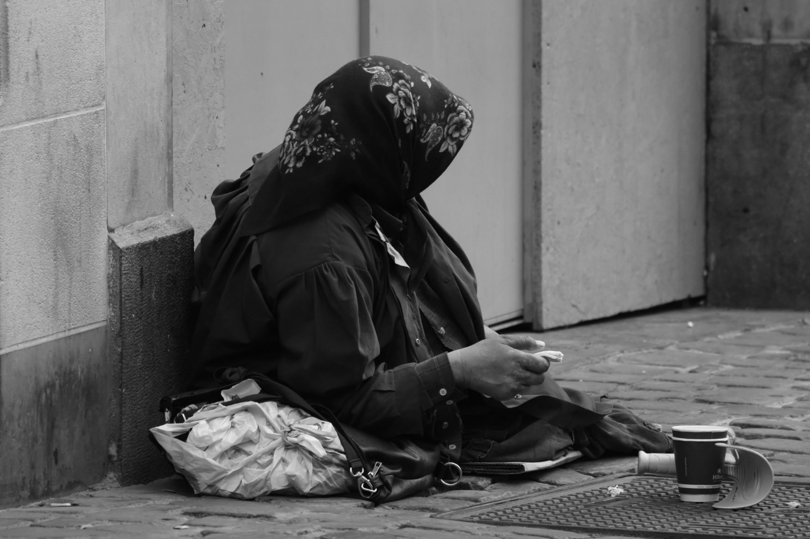
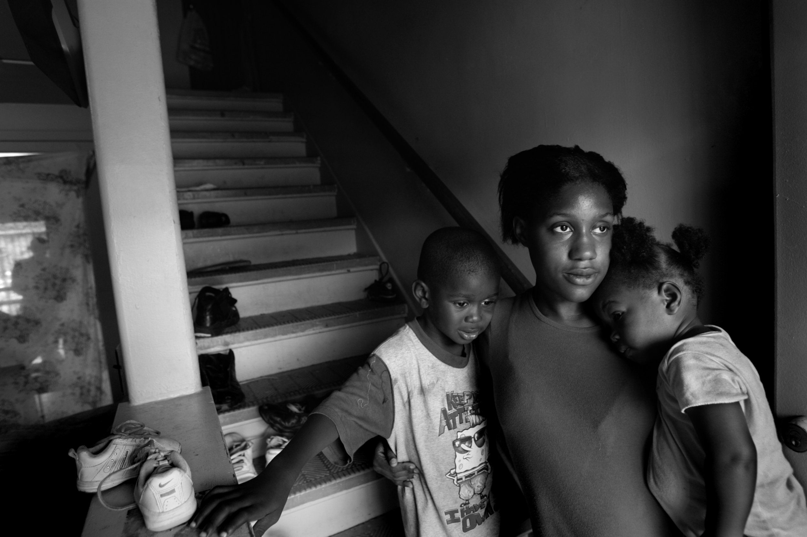
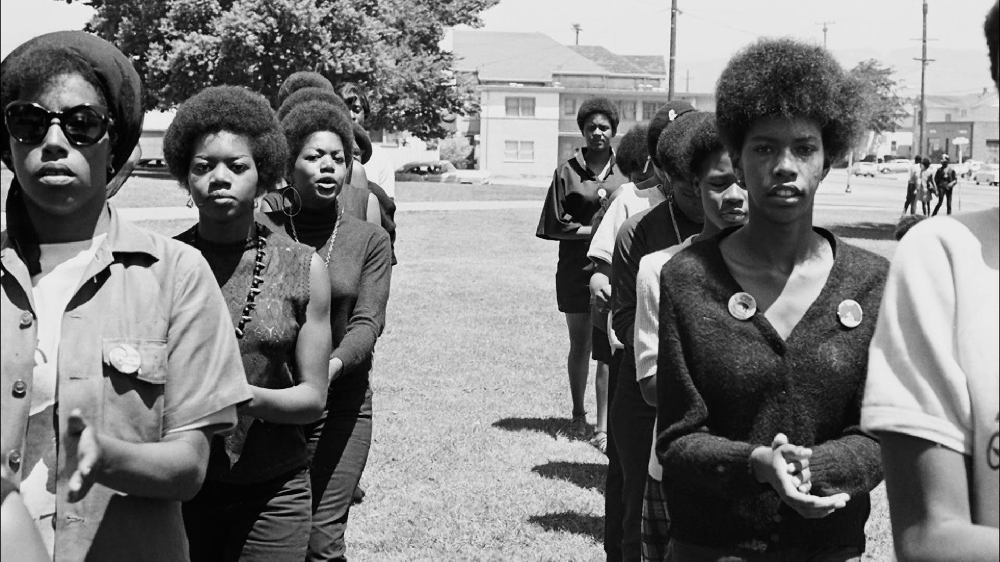

African American Women in Poverty
  
Poverty among African American women is a complex issue that requires a comprehensive and intersectional approach. To address this problem effectively, policies and programs must focus on promoting economic mobility through expanding access to education, job training, equitable job opportunities, affordable housing, and childcare.